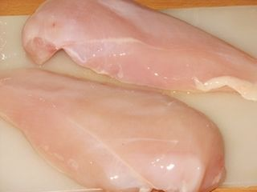
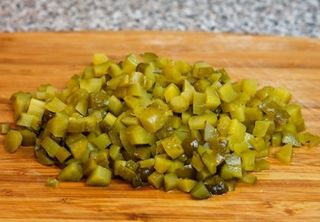
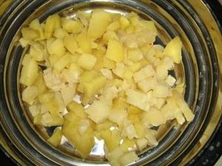
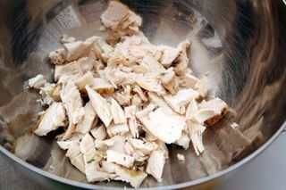

Шаг 1: Подготовить ингредиенты для салата.

Тщательно моем картофель, морковку под холодной проточной водой. Ставим вариться в кастрюлю на медленном огне. Готовность продуктов проверяем зубочисткой либо деревянной шпажкой. Главное не переварить. Курицу также отвариваем до готовности в подсоленной воде. По времени это займет около 20 минут. Куриные яйца варим вкрутую. Для этого промываем их, укладываем в кастрюльку и заливаем доверху водой. Варим на умеренном огне после закипания 10 минут, поле чего остужаем в холодной воде.
Шаг 2: Необходимо всё нарезать в салат.

Маринованный огурец разрезаем пополам вдоль и потом шинкуем на тоненькие кусочки. Такую же операцию проделываем с отварной морковью, которую мы предварительно до этого очистили от кожуры. Режем опять же вдоль, как маринованные огурцы, и потом тонко шинкуем.
Куриные яйца режем вдоль, потом ещё раз пополам и только потом шинкуем. Если у кого-то есть яйцерезка, можно воспользоваться ей, но главное, чтобы получились тонкие кусочки.

Отварной картофель режем сначала вдоль, потом в зависимости от размера картофеля можем разрезать ещё раз, два или даже три, если он у нас крупный. Шинкуем картофель.Открываем банку с горошком и сливаем с него сок.

Всё это кладём в одну посуду. Курицу рвём прямо руками, не бойтесь, так вкус будет лучше. Но если вам не нравится, можете порезать. Это уже не столь важно. Затем кладём майонез, ложку сметаны, солим по своему вкусу, перчим молотым чёрным перцем (он добавит нам душистый аромат в салат). Сам салат я обычно перемешиваю руками.